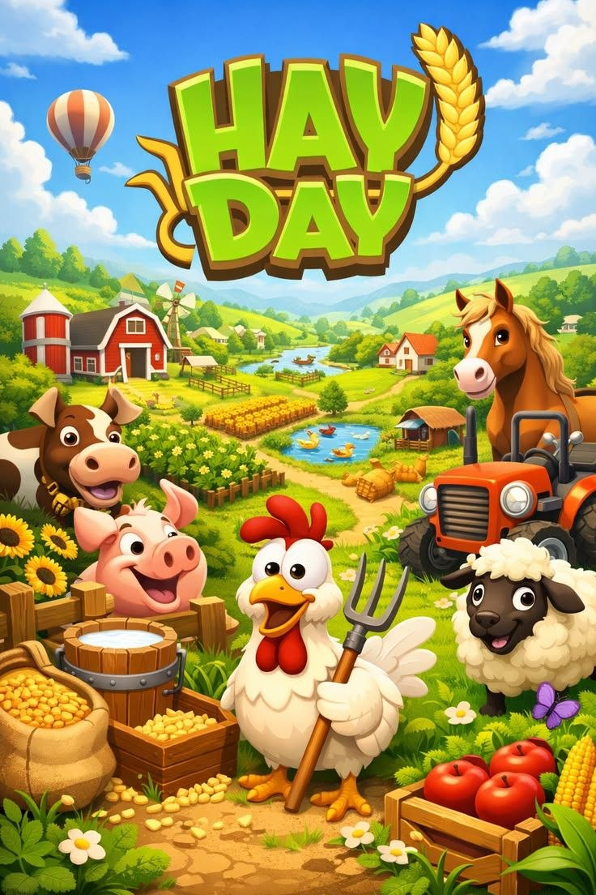
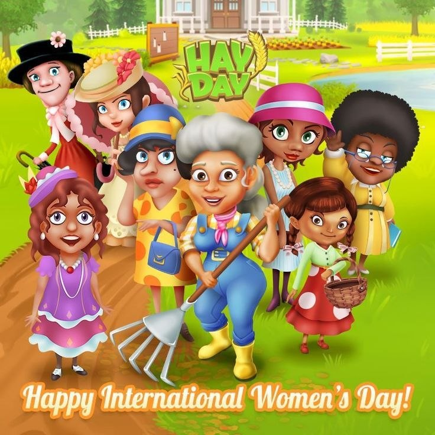
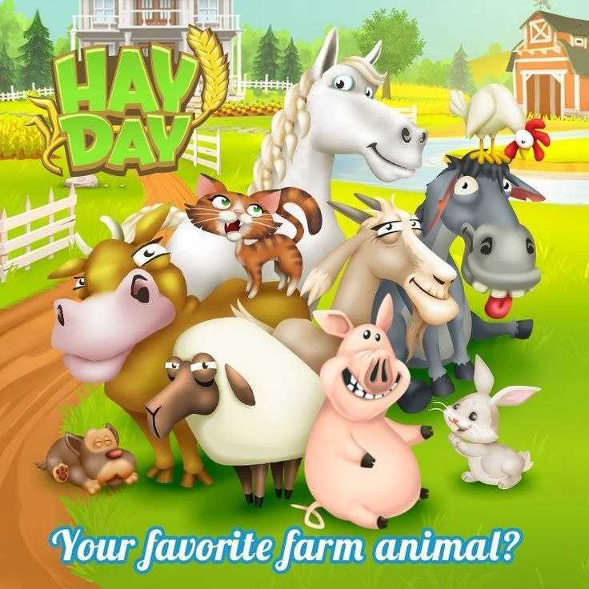
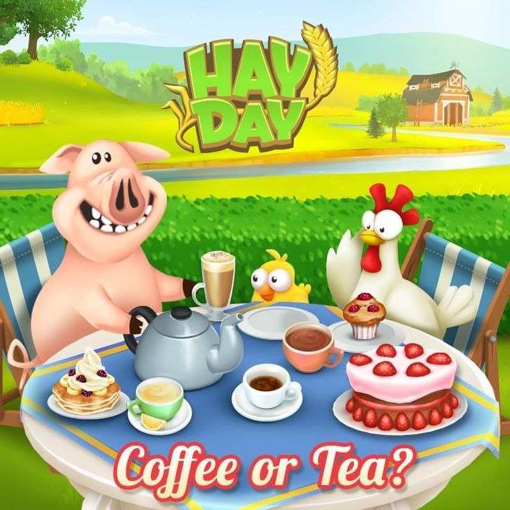

🌽
ដាំដំណាំ
អភិវឌ្ឍដំណាំថ្មីៗដូចជា ស្រូវសាលី ពោត និងអំពៅ ដើម្បីកែច្នៃផលិតផលរបស់អ្នក។
Welcome to the countryside
Hay Day ជាហ្គេមធ្វើកសិកម្មដ៏ពេញនិយម ដែលអនុញ្ញាតឱ្យអ្នកដាំដំណាំ ចិញ្ចឹមសត្វ និងសាងសង់កសិដ្ឋានក្លាយជាការងារដ៏សុចរិត។


Farm Adventure
អភិវឌ្ឍដំណាំថ្មីៗដូចជា ស្រូវសាលី ពោត និងអំពៅ ដើម្បីកែច្នៃផលិតផលរបស់អ្នក។
ព្យាបាលសត្វដូចជាមេមាន់ គោ និងជ្រូក ដើម្បីទទួលបានផលិតផលប្រចាំថ្ងៃ។
លក់ទំនិញទៅកាន់ទីផ្សារ និងអ្នកទិញ ដើម្បីទទួលបាន Coin, XP និងសម្ភារៈថ្មី។
តុបតែងផ្ទះ និងកសិដ្ឋានរបស់អ្នក ធ្វើឱ្យពិភព Hay Day មានភាពរស់រវើកជាងមុន។
Farm Gallery


Ready to start?